태도의 문장 01
연락에는늦어도 답한다
연락이 왔으면 — 늦더라도 꼭 답하라.
응답은 상대를 대화의 바깥에 세워두지 않는 최소한의 존중입니다. 늦었다는 미안함보다 관계를 방치하지 않는 일이 먼저입니다.
오늘의 실천지금 떠오르는 미답장 하나에 짧게라도 답해 보세요.
목차로 돌아가기A field guide to quiet respect
사람을 대하는 태도에는 유행이 없습니다. 답장 하나, 돌려주는 물건 하나, 멈춰야 할 질문 하나가 관계의 온도를 오래 결정합니다.
잘 보이기 위한 예절이 아니라, 서로의 경계를 지키며 오래 함께 살기 위한 생활의 문장들.
첫 번째 문장부터 읽기태도의 문장 01
연락이 왔으면 — 늦더라도 꼭 답하라.
응답은 상대를 대화의 바깥에 세워두지 않는 최소한의 존중입니다. 늦었다는 미안함보다 관계를 방치하지 않는 일이 먼저입니다.
오늘의 실천지금 떠오르는 미답장 하나에 짧게라도 답해 보세요.
목차로 돌아가기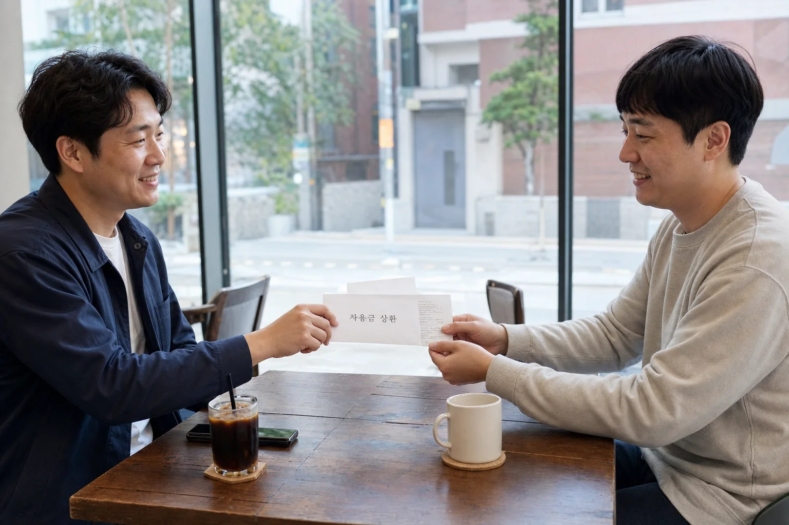
태도의 문장 02
빌린 돈 — 가장 먼저 갚아라.
돈의 크기보다 약속의 순서가 신뢰를 만듭니다. 갚을 수 있을 때 먼저 돌려주는 태도는 상대의 기다림을 가볍게 합니다.
오늘의 실천미뤄둔 정산이나 작은 송금부터 오늘 끝내 보세요.
목차로 돌아가기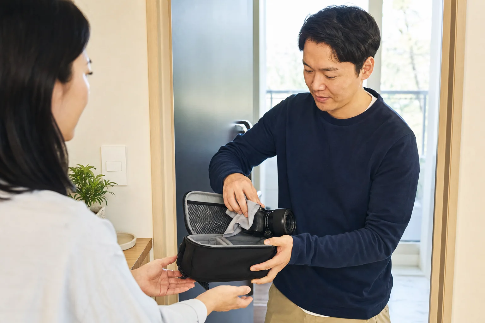
태도의 문장 03
빌린 물건 — 더 좋은 상태로 돌려줘라.
물건을 아껴 돌려주는 일은 빌려준 사람의 호의를 기억했다는 증거입니다. 사용한 흔적보다 감사의 흔적을 남깁니다.
오늘의 실천닦고, 정리하고, 빠진 것이 없는지 한 번 더 확인하세요.
목차로 돌아가기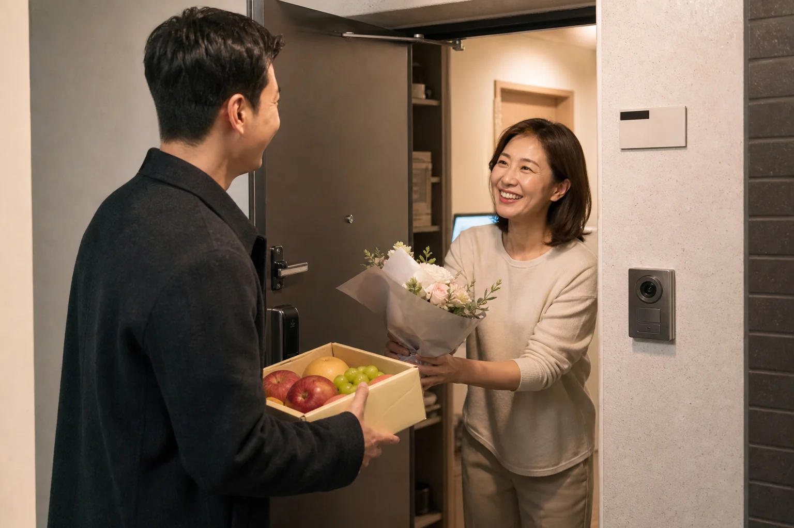
태도의 문장 04
초대 받으면 — 빈손으로 가지 마라.
선물의 가격이 아니라 초대를 가볍게 여기지 않았다는 표시가 중요합니다. 작은 꽃 한 송이도 관계에는 충분한 문장이 됩니다.
오늘의 실천상대가 부담 없이 함께 나눌 수 있는 작은 것을 준비하세요.
목차로 돌아가기태도의 문장 05
남의 실수 — 오래 기억하지 마라.
잘못을 기억하는 것과 사람을 잘못 속에 가두는 것은 다릅니다. 반복을 막을 만큼 배우되, 상대가 달라질 자리도 남겨야 합니다.
오늘의 실천이미 끝난 일을 다시 꺼내고 싶은 순간, 지금 꼭 필요한 말인지 묻습니다.
목차로 돌아가기태도의 문장 06
남의 뒷담화 — 같이 하지 마라.
함께 웃어준 순간 나도 그 말의 책임자가 됩니다. 자리를 피하거나 화제를 바꾸는 조용한 선택이 관계의 기준을 세웁니다.
오늘의 실천사람이 없는 자리에서 그 사람을 지켜주는 말을 하나 건네세요.
목차로 돌아가기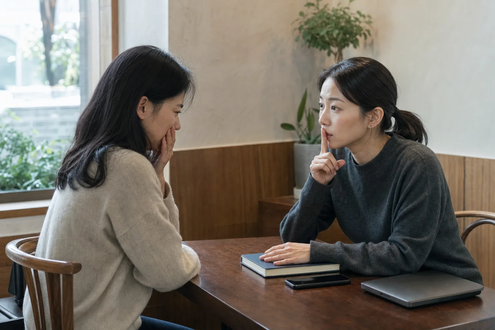
태도의 문장 07
비밀을 들었으면 — 절대 누설하지 마라.
비밀은 재미있는 정보가 아니라 누군가가 잠시 내게 맡긴 취약함입니다. 전달받았다고 해서 전달할 권리까지 생기지는 않습니다.
오늘의 실천말하고 싶은 충동이 생기면, 그 정보의 주인이 누구인지 먼저 떠올리세요.
목차로 돌아가기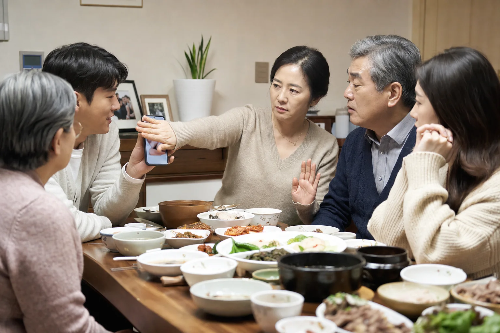
태도의 문장 08
남의 집안일 — 함부로 말하지 마라.
가족의 사정은 가까워 보여도 타인의 생활 경계 안에 있습니다. 알게 된 것과 말해도 되는 것은 같은 뜻이 아닙니다.
오늘의 실천당사자가 직접 공개하지 않은 사정은 내 이야기에서 빼세요.
목차로 돌아가기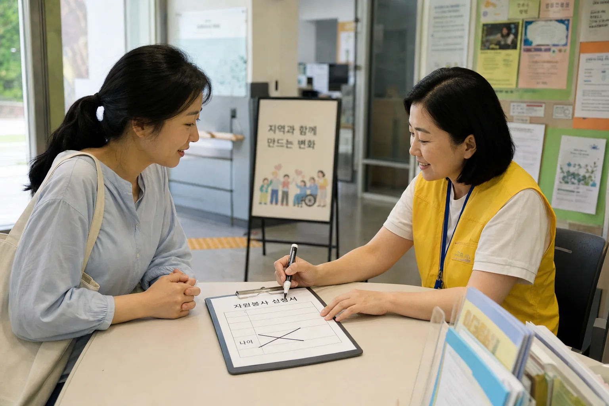
태도의 문장 09
남의 나이 — 묻지 마라.
숫자는 사람을 빠르게 분류하지만, 그 사람의 오늘을 설명하지는 못합니다. 필요하지 않은 질문을 거두면 대화는 더 넓어집니다.
오늘의 실천나이 대신 요즘 무엇에 마음을 쓰는지 물어보세요.
목차로 돌아가기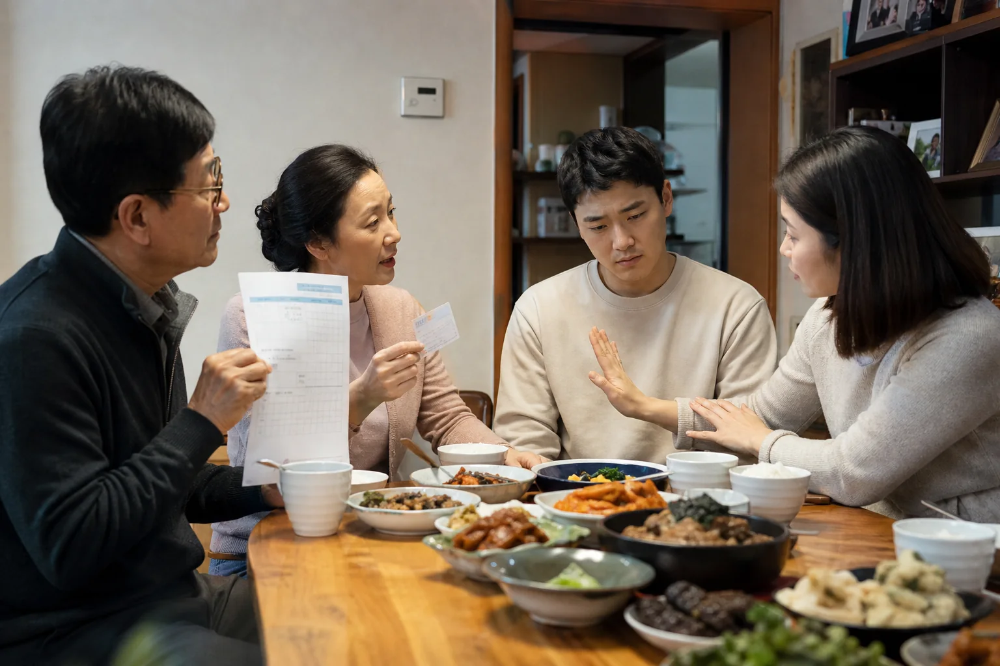
태도의 문장 10
자식 성적·직업 — 비교하지 마라.
비교는 아이의 삶을 부모의 체면으로 바꾸기 쉽습니다. 서로 다른 속도와 방향을 인정할 때 한 사람의 고유함이 자랍니다.
오늘의 실천결과보다 그 사람이 오래 들인 노력과 선택을 물어보세요.
목차로 돌아가기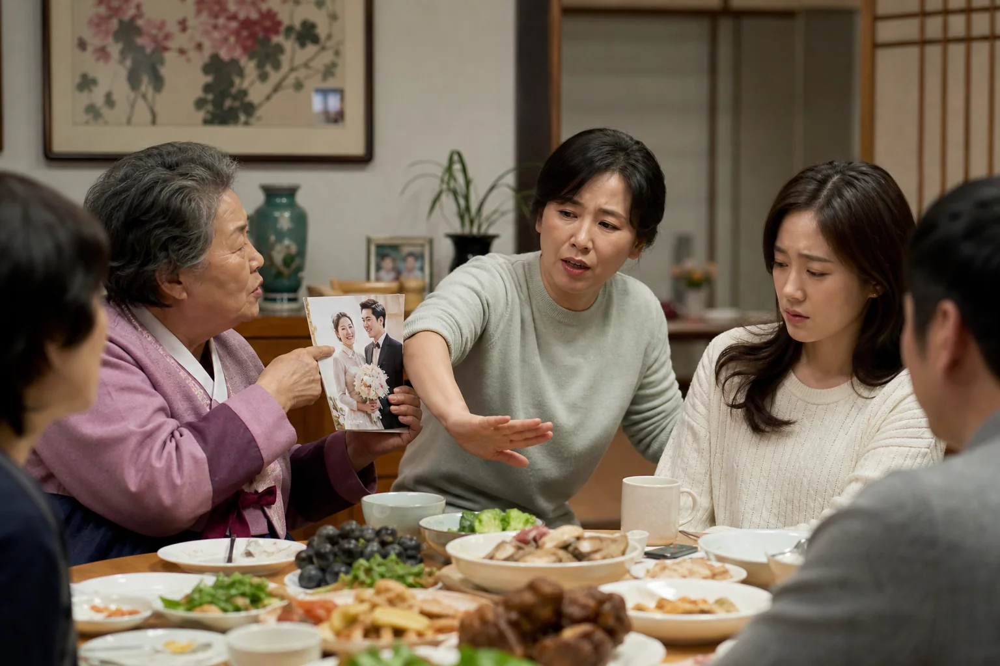
태도의 문장 11
왜 결혼 안 했는지 — 묻지 마라.
결혼은 설명을 요구받아야 하는 정상 경로가 아닙니다. 선택과 사정이 다른 삶을 결핍처럼 다루지 않는 것이 예의입니다.
오늘의 실천관계의 형태보다 그 사람이 지금 잘 지내는지에 관심을 둡니다.
목차로 돌아가기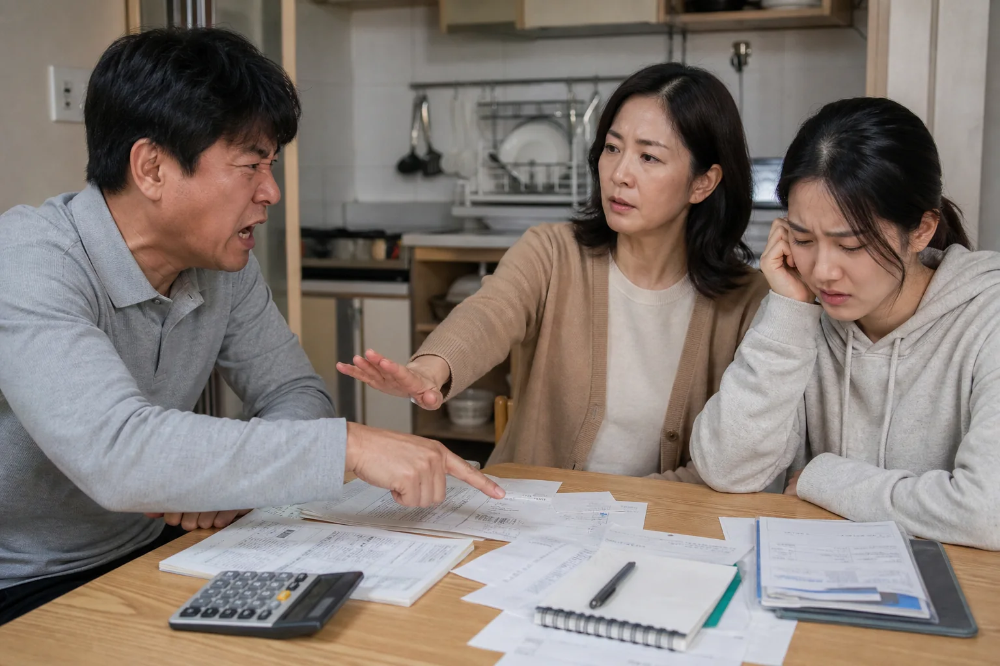
태도의 문장 12
돈 얘기할 땐 — 기 죽이는 말 피하라.
경제적 상황은 능력이나 인격의 순위표가 아닙니다. 숫자를 다룰수록 말은 더 정확하고 사람에게는 더 부드러워야 합니다.
오늘의 실천비교와 과시를 빼고, 필요한 사실과 선택지만 또렷하게 말하세요.
목차로 돌아가기태도의 문장 13
술 취했을 땐 — 충고하지 마라.
들을 준비가 없는 순간의 충고는 도움보다 상처로 남기 쉽습니다. 먼저 안전을 챙기고, 중요한 말은 서로 맑을 때 나눕니다.
오늘의 실천오늘은 물과 귀가를 돕고, 이야기는 내일 다시 약속하세요.
목차로 돌아가기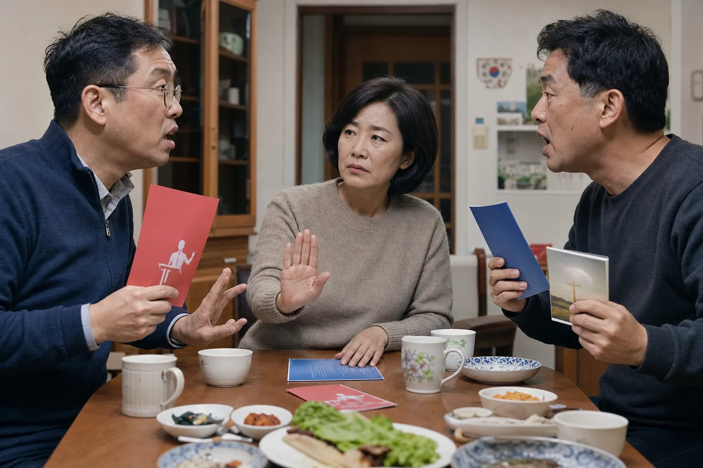
태도의 문장 14
남의 종교·정치 — 함부로 말하지 마라.
믿음과 정치적 판단은 한 사람의 경험과 가치가 오래 쌓인 자리입니다. 다름을 곧 무지나 악의로 번역하지 않아야 대화가 남습니다.
오늘의 실천설득하기 전에 왜 그렇게 생각하는지 한 번 더 들으세요.
목차로 돌아가기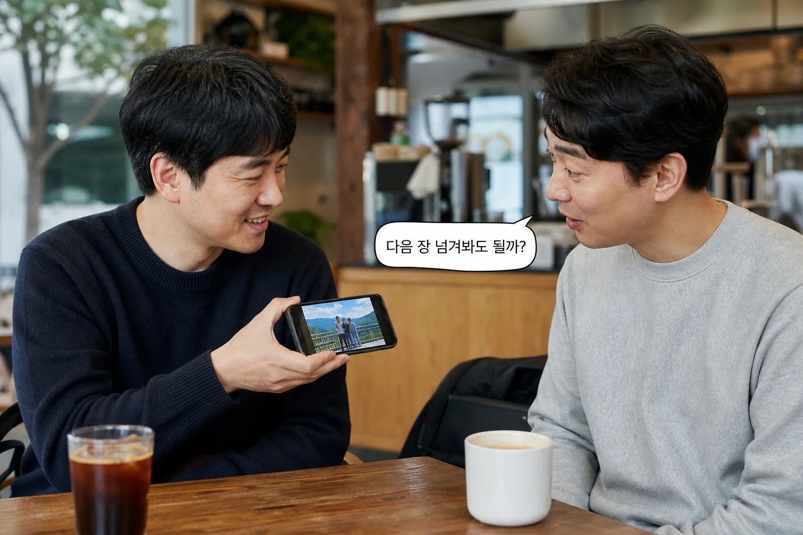
태도의 문장 15
폰 사진 보여주면 — 옆으로 넘기지 마라.
휴대전화 화면 하나를 건넨 것은 앨범 전체를 허락한 일이 아닙니다. 작은 손가락 움직임에도 사생활의 경계는 분명히 존재합니다.
오늘의 실천다음 사진이 궁금하면 손보다 먼저 말로 물어보세요.
목차로 돌아가기